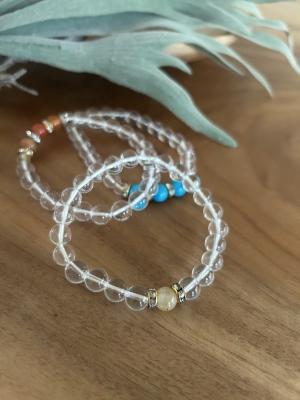
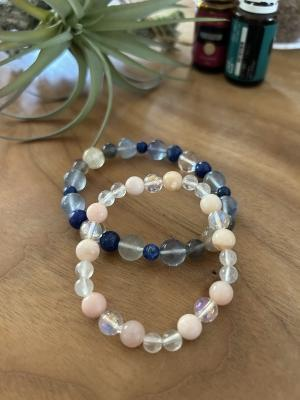

久しぶりすぎてどーしたらいいのか分からない(爆)
今日はお天気下り坂、夕方には雨になる予報でした。
歯医者さんに行って、昼前に帰って来て
午前中やり残した家事をやって、
雨が降る前にひまちゃんの散歩に行くぞー ! と
外に出たら、もう雨が降っていました・・・ひまり氏、すまん(汗)。
・・・ゆるしましぇん・・・(怒)。
さて・・・先日阿久比の画材屋さんのオーナーさんに
あたしのは○か・・・ぢゃなくて
B全パネルを高校の美術部に寄付するため
持っていっていただいたのですが、そのご縁で
今年の夏にワークショップをやらせていただくことになりました。
ハルが中学校を卒業して県外の学校に行ってしまって
すっかりさっぱり手がかからなくなって1年以上。
さすがにぼちぼちなんかやろっかな〜と思っていたので
声をかけていただけたのは本当にありがたい・・・。
ワークシヨップということで、なんかアクセサリーがいいね〜、
・・・とか、その時話していたので、とっても簡単なところから
パワーストーンのブレスレットにしようと考えております。
まだ詳しくはほぼ決まっていませんが・・・
「メニューなどおおよそ枠を決めて、見本写真ください」と
言われたものの、あまりに久しぶりすぎて浦島太郎状態・・・(爆)。
しばらく呆然と部屋中を見渡し、「まずは見本か ? 」と
資材を探し始めました・・・ウレタンゴム、どこや ?? (笑)。
しかし、資材も道具も行方不明な上に身体的な劣化がひどい・・・(悲)。
見本を作ろうと思ったんだけど ! 目が見えんのよーー !!
かなり前途多難です・・・リハビリ必要だわ。


・・・天気悪くて写真の発色がびみょーですが・・・(汗)。
iPhoneの写真機能が優秀で救われましたよ〜。
そーいえば、ムカシは一眼レフで写真撮ってたよね !
写真撮影もけっこう重労働で時間もかかってた。
iPhoneの写真ってホントにきれいに撮れるし
↑上の写真も、補正機能で鮮やかにくっきり出来ちゃうし〜。
技術の進歩 ! すばらしい〜 !
是非とも人間の劣化もカバーしてくれたまえ〜 !
て、そこまではムリかしらね・・・がんばるわ〜。